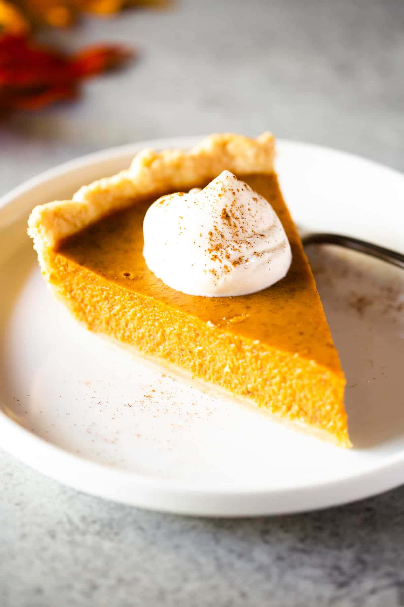

Pumpkin Pie Fall Recipe

Home
- Preheat oven to 425 degrees F.
- In a large bowl beat the eggs and pumpkin together. In a separate bowl, combine the sugar, cinnamon, salt, ginger and cloves, and add to pumpkin mixture.
- Gradually stir in the evaporated milk. Carefully pour mixture into unbaked pie shell*.
- Bake at 425 degrees F for for 15 minutes. Reduce temperature to 350° F; bake for 40 to 50 minutes longer, or until the pie is set. Check for doneness by giving the pie a gentle wiggle. The center may jiggle just a tiny bit. It will continue to set up as it cools. Or, it is done when a sharp knife inserted in center comes out clean.
- Cool completely on a wire cooling rack. Serve immediately with whipped cream and caramel pecan topping, if desired.